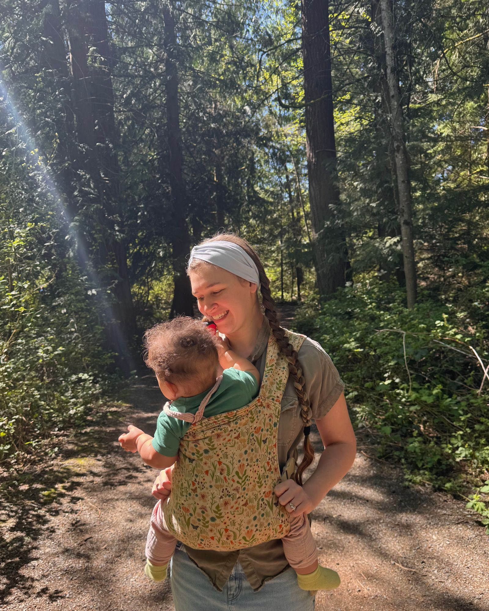

What We Recommend
A curated gear guide for Little Roots families.
These are the products our family uses and loves for Little Roots. We put this list together because figuring out what to buy (and what to skip) for outdoor play can feel overwhelming, especially when you’re also trying to avoid the stuff you don’t want on your toddler’s skin.
I’m an OSPI-certified educator with a background in preschool and middle school science, and I vet this list the same way I approach curriculum. Everything here is something I’ve used myself or researched carefully. We prioritize nontoxic, PFAS-free, and OEKO-TEX or EWG-verified products whenever possible. Some links are affiliate links.
Here’s the thing though: you don’t need to buy everything on this list. Your toddler needs one forest school outfit. That’s it. One set of layers they can wear every Thursday. Start with what you don’t have and build from there. The most important thing is that you and your kid show up dressed for the weather and ready to get muddy.
New family? Here’s what you need for Thursday.
- A backpack with a chest clip
- Rain boots (natural rubber, easy to pull on)
- A rain suit (the most important piece, buy it new)
- Base layers in merino or synthetic (no cotton)
- A full water bottle
- A nut-free snack and a full change of clothes
100% ZQ certified merino wool, sister-owned out of Jackson Hole, Wyoming. Our pick for base layers and mid-layers that hold up across seasons.
Shop iksplor →Our go-to for rain suits, boots, and cold-weather gear. Little Roots families get 25% off orders over $29.99 plus free shipping over $100.
LITTLEROOTS tap to copyFinnish brand, PFAS-free since before it was a marketing angle. You’ll find specific product links throughout the page, or shop their full collection:
Shop Reima →The Backpack
What to look for: chest clip, external water bottle pocket, lightweight enough for your toddler to carry themselves if desired (recommended size: 12L (up to 18L for older/taller toddlers))
REI Co-op Tarn 12 L Pack (Kids) (opens in new tab)
Our top pick. Has a chest clip, water bottle pockets, and comes in fun colors. The 12L is the sweet spot for our 1 to 3 year olds who want to carry their own pack — big enough for a change of clothes, snack, and water bottle without being too bulky for little shoulders. (If your child is on the older or taller side and wants more room to grow into, REI also makes an 18 L version.)
Tip:Label everything with your child’s name. You would be amazed how many identical water bottles and backpacks show up on a Thursday morning.
What Goes in the Backpack Every Week
This is your weekly packing checklist, rain or shine:
Every week: Reusable water bottle (full!), snack in a sealed container (nut-free), full change of clothes (shirt, pants, socks, underwear, weather-appropriate), diapers/wipes/bags if needed, two clean washcloths in a ziplock bag for muddy hands and faces.
Warm months: Apply sunscreen and bug spray before arrival and bring in case you need to reapply.
Optional but nice to have: A sit-upon or small towel for circle time. A nature collecting bag or small basket.
What we supply: Everything else! Watercolors, paint, paper, magnifying glasses, bug jars, collecting trays, sensory materials, mud kitchen supplies, books. You just need your child and their backpack.
Summer Gear
June through September
PNW summers can be gorgeous, but mornings at McCollum Park still start cool. Layer a t-shirt under a long sleeve or light jacket so you can peel layers as the morning warms up. Lightweight long sleeves and pants protect from scratches, sun, and bugs better than shorts and tanks.
Lightweight Base Layers
A lightweight merino base layer is one of the best things your kid can wear in summer. Merino keeps them cool when it’s warm, warm when it’s cool, wicks moisture, and provides natural sun protection.
What to look for: Lightweight merino wool, around 150gsm or lower. OEKO-TEX certified is ideal.
iksplor Lightweight Merino Base Layers
100% ZQ certified merino wool from a small, sister-owned company in Jackson Hole, Wyoming. The lightweight option is perfect for summer mornings at McCollum Park, when it starts cool and warms up fast.
Sun Hats
What to look for: Wide brim with neck coverage, UPF 50+, chin strap that stays on, chemical-free UV protection (from fabric weave, not chemical treatments).
Jan & Jul Cotton Floppy Sun Hat (opens in new tab)
100% natural cotton, UPF 50+ protection that comes from the weave of the fabric, not chemicals or dyes. Adjustable chin strap with a breakaway safety clip. Their Grow-With-Me design means you can size up and tighten the drawstring, so one hat lasts multiple seasons. Adorable prints, lightweight, and packable. This is the one that actually stays on a toddler’s head.
Trail Shoes
What to look for: Closed-toe, good grip, easy for toddlers to put on (velcro or pull-tab lacing), protective toe bumper. No Crocs or flip-flops on the trail.
Tepastelu - Toddler ReimaTec Waterproof Barefoot Shoes (opens in new tab)
Waterproof barefoot shoe with a wide toe box and zero heel drop, so feet land and move naturally on uneven ground. The 4mm sole is thin enough to actually feel what they’re walking on without losing protection. Velcro closure is easy for toddlers to handle themselves, and the insoles are removable for a more precise fit. PFAS-free.
Lomalla - Toddler Sandals (opens in new tab)
Lightweight closed-toe sandal for warmer days. Fluorocarbon- and PVC-free. Good when they want something more open but you still want toe coverage on the trail.
Trail Socks
Good socks make a bigger difference than people realize. Wet cotton socks are how blisters happen. Look for wool or wool-blend socks that wick moisture and stay put inside shoes.
What to look for: Merino wool blend, no slipping inside shoes.
iksplor Original Socks
Merino wool socks in kid and adult sizes. They actually stay up and dry fast when feet get wet.
Sunscreen
What to look for: Mineral-based (zinc oxide), EWG Verified or MADE SAFE certified, fragrance-free, broad spectrum SPF 30+. Apply before you arrive. We can’t apply products to your child, but you’re welcome to reapply during class.
Babo Botanicals Sensitive Baby Mineral Sunscreen Lotion SPF 50 (opens in new tab)
This is what we use. EWG Verified, MADE SAFE certified, and B Corp. Zinc oxide only, fragrance-free, water resistant for 80 minutes, and made with plant-based ingredients like shea butter and sunflower oil. No oxybenzone, no octinoxate. Safe for babies 6 months and up.
Babo Botanicals Sensitive Baby Mineral Sunscreen Stick SPF 50 (opens in new tab)
Same trusted formula in a stick for quick touch-ups on cheeks, ears, and noses. Tosses right in the backpack.
Bug Spray
What to look for: DEET-free, plant-based ingredients, safe for babies 6 months and up.
Badger Anti-Bug Shake & Spray (opens in new tab)
USDA Organic and DEET-free. Uses citronella, rosemary, and wintergreen oils. Safe for the whole family, including babies 6 months and older. Smells good, works well, and you can feel good about what’s going on their skin.
Badger Anti-Bug Balm Stick (opens in new tab)
Same formula in a stick. Lives in the backpack for reapplying on the trail.
Fall, Winter & Spring Gear
October through May
This is the Pacific Northwest. It will rain. It will be muddy. Your child will find the one puddle you didn’t see coming. The trick to staying warm and dry outdoors is layering, and once you get the system down, you’ll never dread a rainy Thursday again.
The golden rule: no cotton on cold or wet days. Cotton absorbs moisture and holds it against the skin, which makes kids cold fast. Choose wool or synthetic fabrics for base layers and fleece, and save the cotton for summer.
One outfit is plenty. Your child can wear the same forest school outfit every Thursday. Don’t feel pressure to buy multiples of anything unless you want to.
Layer 1: Base Layer
Merino wool is the gold standard here. It regulates temperature, wicks moisture, and stays warm even when wet.
What to look for: Merino wool or synthetic (polyester, polypropylene). OEKO-TEX certified is ideal. Long cuffs for growing room.
iksplor Merino Wool Base Layers (opens in new tab)
100% ZQ certified merino wool from a small, sister-owned company in Jackson Hole, Wyoming. Long-fitting limbs and thumbholes that let families get extended wear out of one size. They also make adult merino layers, so you can layer up the same way your little one does.
Secondhand tip:Base layers, fleece, and insulation layers are all great to find used at consignment shops, Facebook Marketplace, or resale sites. Just check labels for wool or synthetic and skip the cotton.
Layer 2: Fleece Mid-Layer
What to look for: Fleece or wool. No cotton sweatshirts. Zip-up jackets are easiest for toddlers to manage. Great to find secondhand since kids grow out of them fast.
iksplor Kids Merino Wool Jogger & Crew Set (opens in new tab)
A 100% midweight merino wool set from iksplor — noticeably warmer than a base layer, built for real cold. The relaxed crew neck layers easily over a long sleeve without bunching, and the drawstring jogger stays put through active days. Warm enough for cold nights, breathable enough to move in. Soft against sensitive skin, machine washable, and gets softer with every wash.
Layer 3: Insulation (Coldest Days)
A puffy jacket or snow pants over the fleece, under the rain layer. You may not need this layer until November or December, but when the temperature drops below 40, it makes all the difference.
What to look for: Down or synthetic puffy jacket, snow pants or snow suit for the coldest stretches. If it’s not labeled waterproof, it goes under the rain layer. Check thrift stores for snow gear since kids outgrow it quickly.
OAKI Snow Suit (opens in new tab)
One-piece construction means no gap between jacket and pants when kids are climbing, rolling, and doing all the things they do out there. Rated to -20°F with a 29,000mm+ waterproof rating, so it handles real cold, not just chilly mornings. The grow-fit design buys you at least an extra season before sizing up, and the shell is 92% recycled polyurethane—tough and built to last.
Reima Toddler Winter Jackets (opens in new tab)
Finnish brand, been around since 1944, and PFAS-free long before most companies were thinking about it. Good fit for layering and holds up well to repeated use.
Layer 4: Waterproof Outer Layer
This is the most important layer and the one we’d recommend buying new. Used waterproofing can break down over time, and a leaky rain jacket on a PNW morning is miserable for everyone. Buy it big enough to fit all your other layers underneath.
Every brand below is PFAS-free and PVC-free, so you don’t have to dig through the fine print on any of them.
What to look for: polyurethane (PU) coated, sealed seams, one size up for layering room.
OAKI One-Piece Rain Suit (opens in new tab)
A one-piece is fantastic for younger toddlers because there’s no gap at the waist for water to sneak in. Comes in tons of colors and is a forest school staple. (OAKI also makes separate rain jackets if you’d rather pair them with your own rain pants.)
Reima Toddler Outdoor Jumpsuits (opens in new tab)
An 80-year-old Finnish brand that’s been making nontoxic outerwear since long before it was a marketing angle. (Reima also makes standalone raincoats and jackets if you’d rather pair them with your own rain pants.)
Therm Kids Rain Jacket (opens in new tab)
Made from 100% recycled fabrics. Their SplashMagic prints appear when the jacket gets wet, which is basically the coolest thing ever for a toddler in the rain.
Pro tip:Pull rain pants OVER the boots, not tucked in. Trust us on this one.
Hats, Mittens & Extras
For cold days, add a fleece or wool hat, a neck warmer (easier than a scarf for toddlers), and waterproof mittens with cuffs big enough to go over the jacket sleeves. Thin fleece or wool glove liners underneath waterproof mittens give an extra layer of warmth and mean their hands are still covered when they pull the big mittens off to eat snack or pick up a pinecone.
Wool socks: A pair of wool socks makes a bigger difference than you’d think. Smartwool and REI both make great toddler-sized options. Avoid cotton socks on cold or wet days.
OAKI Black Neoprene Trail Gloves (opens in new tab)
Flexible neoprene gloves that stay on little hands and hold up to mud, water, and cold. Great for transitional weather when full mittens are too much but bare hands are too cold. Easy to pull on and off, and they dry quickly after a wet morning outside.
Reima Toddler Winter Beanies (opens in new tab)
Same Finnish brand as the jackets and suits. PFAS-free, sized to fit under hoods, and stretchy enough to actually stay on a moving toddler. Good option if you want a hat that coordinates with the rest of the Reima system.
Year-Round Essentials
Boots
What to look for: Natural rubber (not PVC), good grip, easy to pull on and off, wide enough for socks.
OAKI Kids Loop Rain Boots (opens in new tab)
Natural rubber, BPA-free, easy to pull on. They match the OAKI rain suits if you want a coordinated look. (OAKI also makes snow boots for the coldest months.)
PNW tip: McCollum Park mornings can be wet any month of the year. Keep a pair of boots in the car even on sunny days, or skip the trail shoes altogether and just make boots their default footwear for Thursday.
Baby Carriers
If you have a younger sibling tagging along or think a carrier would be handy for your toddler throughout class, here’s what we use and love.
I bring my hope&plum Lark to every session. It lives in my Little Roots backpack and comes out when my daughter wants to be held while I’m hauling bins and setting up stations. If you have a baby in tow or a toddler who needs a quick snuggle break, a good carrier makes forest school mornings so much easier.
hope&plum Lark Baby Carrier (opens in new tab)
Sewn in Minnesota by a women-owned manufacturer. The Baby Lark works from 10 to 45 pounds and the Kid Lark works from 25 to 65 pounds with an easy buckle system and front or back carry options. Size-inclusive with two length options designed to actually fit all bodies, not just accommodate them. Natural fibers, no foam or mesh bulk. Folds up small enough to stash in your backpack. It's the carrier I reach for daily, not just for class.
hope&plum Ring Sling (opens in new tab)
The fastest carrier to get on and off. Works from 7 to 35 pounds and adjusts in seconds with one hand. If your little one goes up and down a lot, wanting a lift between stations and then back down to explore, a ring sling lives on your shoulder and is ready the second they reach up.
hope&plum Meh Dai (opens in new tab)
A tie-style carrier with wide straps that distribute weight evenly. Adjusts from newborn through toddler, no insert needed. A great option if you deal with shoulder or back pain.
Water Bottles
What to look for: Stainless steel, plastic-free, toddler-friendly lid they can open on their own (even with mittens if possible).
Pura Kiki Insulated Straw Bottle (9oz / 11oz) (opens in new tab)
The only 100% plastic-free, MadeSafe Certified bottle on the market. Stainless steel with medical-grade silicone straw and lids. The best part: you buy one bottle and swap lids as your child grows, from infant nipple to straw to sport top. No plastic ever touches their drink.
Not ready for a straw yet? Pura also makes sippy cup lids that fit the same bottles, so you can start with a sippy and swap to a straw when your toddler is ready. And their silicone travel covers are great for tossing the bottle in the backpack without worrying about leaks.
Cold months tip:Fill a thermos-style bottle with warm water or herbal tea. It’s a tiny thing that makes a cold morning so much more comfortable for little ones.
Snack Containers
What to look for: Stainless steel or silicone, BPA-free, easy for toddlers to open on their own, spill-resistant for backpacks. Remember: all snacks must be nut-free.
Elk and Friends Stainless Steel Snack Cups (opens in new tab)
Stainless steel with a removable silicone petal lid that toddlers can reach into easily. Comes with a spill-proof travel lid for the backpack. Dishwasher safe, no plastic touching food. The side handles are perfect for little hands.
Pura Stainless Steel Lunch Container (opens in new tab)
MadeSafe Certified, 100% stainless steel with a silicone band for a secure lid. Two molded compartments, no welds. Great for packing a mix of snacks.
Forest-Friendly Snack Ideas
The best forest school snacks are nut-free, easy to eat with muddy hands, and won’t melt or crumble everywhere. Some favorites: banana, berries (blueberries travel especially well), squeeze pouches, cheese cubes or sticks, crackers, puffs, dried fruit, veggie pouches, hard-boiled egg, rice cakes, and yogurt melts.
A ziplock bag with a mix of things works fine. Each family brings their own. We don’t share food between families.
Sit-Upons
A sit-upon is just something small and lightweight for your child to sit on during circle time. It keeps their bottom dry on wet mornings and gives them a little “spot” to settle into.
A simple small towel or a square of fleece fabric is honestly all you need. Cut a piece of fleece about 12 by 12 inches, roll it up, and tuck it in the backpack. It stays dry enough, it’s soft for sitting, and you can toss it in the wash after class. No need to buy anything fancy.
Bringing Forest School Home
The hands-on work we do on Thursdays doesn’t have to end at the trailhead. These are the pieces we use to bring that same kind of open-ended, child-led play into our home, and a few we recommend to families who want the same.
Learning Through PLAYtrays
A tuff tray is a shallow, sturdy tray built to contain messy, open-ended play. Think of it as a portable version of the forest floor: fill it with mud, water, sand, ice, paint, or loose parts from the backyard and let your child decide what happens next.
These are the same trays we set out at every Little Roots session. Each Thursday they become our sensory stations: water play, mud kitchen, nature sorting, ice exploration. Kids who are used to seeing them at class already know how to engage, which means setting one up at home gives you a ready-made invitation to play without a lot of setup on your end.
Designed by an Early Years Educator, made with BPA-free, food-contact compliant materials. Little Roots families get 5% off with code LITTLEROOTS.
A Note on Buying Secondhand
You don’t need to buy all of this new. Base layers, fleece, insulation, backpacks, boots, and hats are all great to find secondhand at thrift or consignment shops, Facebook Marketplace, or resale sites like Poshmark, eBay, and Mercari. Kids grow so fast that used outdoor gear is often in excellent condition.
The one thing we’d recommend buying new: the waterproof outer layer. Waterproof coatings break down over time, and a used rain jacket that no longer repels water defeats the purpose. Everything else? Buy it used, borrow it, or hand it down. That’s the forest school way.
Some links on this page are affiliate links. If you purchase through them, a small percentage supports Little Roots at no extra cost to you.